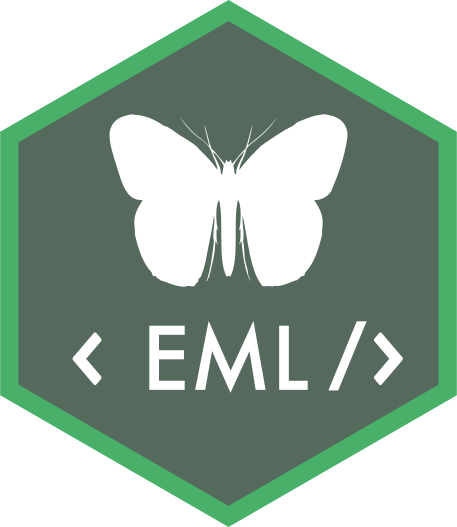

Changelog
Source:NEWS.md
EML 2.0.6
- Improved performance of
shiny_attribtuesby caching calls tounits::valid_udunits_prefixes(See https://github.com/ropensci/EML/issues/332). This should dramatically improve performance of the Shiny application for certain use cases. - Changed how
set_taxonomicCoverageworks to follow the EML schema’s guidance on handling species names (See https://github.com/ropensci/EML/issues/328). Species named are now stored as-is rather than split into genus and species. - Extended
set_taxonomicCoveragewhen called withexpand=TRUEto support multiple values (See https://github.com/ropensci/EML/pull/329) - Fixed a minor typographical issue in the Working with Units vignette (See https://github.com/ropensci/EML/commit/eb1604817809d2cbea5405ed6909c0e046e31a3e)
- Modified how
set_attributessets storageType on numeric columns so it will acceptintegerwhen provided by the user while still defaulting tofloat(See https://github.com/ropensci/EML/issues/324) - Extends
get_attributes,set_attributes, andshiny_attributesto support attribute-level semantic annotations (See https://github.com/ropensci/EML/issues/318) - The test suite will now skip tests dependent on taxadb when it’s not installed (See https://github.com/ropensci/EML/issues/320)
EML 2.0.5
CRAN release: 2021-02-27
- migrate upstream namespace changes units::as.units -> units::as_units
EML 2.0.3
CRAN release: 2020-07-23
- Note recent improvements to validation have been inherited through the release of
emld0.5.0, package dependency now requires upgradingemldas well. - Fixed a bug in
set_attributescausing an error when specifying an intervalmeasurementScale. (#293) - Updated test suite to account for the switch from taxize to taxadb
- Updated test suite to match recent changes in
emld0.5.0 regarding unit definitions (See https://github.com/ropensci/emld/issues/56)
EML 2.0.2
CRAN release: 2020-02-08
- minor bugfix to documentation
- Moves to taxadb in place of taxize for optional species classification
- Note recent improvements to validation have been inherited through the release of
emld0.4.0, package dependency now requires upgradingemldas well.
EML 2.0.0
CRAN release: 2019-04-23
-
EML 2.0.0 is a ground-up rewrite of EML 1.x package. The primary difference is that EML 2.0.0 is built on S3 (list) objects instead of S4 object system. This makes the package interface easier to use and extend. Under the hood, this approach relies on the
emldpackage, which uses a JSON-LD representation of EML which provides a natural translation into the list-based format.While most high level functions for creating EML have been preserved, the change to S3 means that this package will not be backwards-compatible with many scripts which relied on the S4 system.
Added a
NEWS.mdfile to track changes to the package.